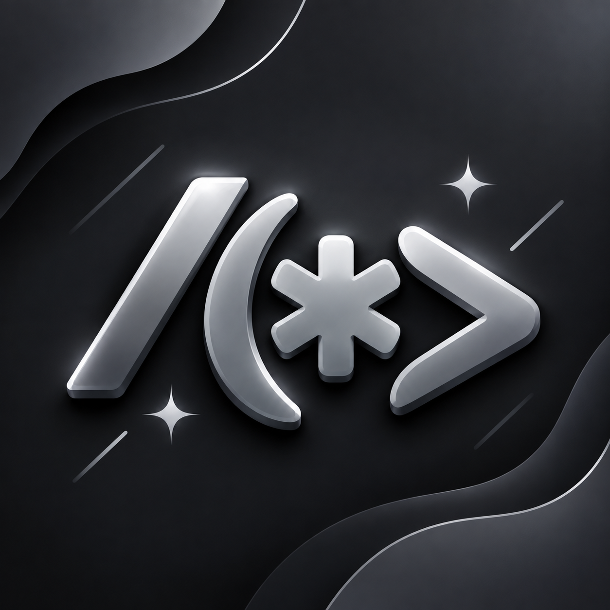

Welcome to Anti IDE
Clon ligero de IntelliJ IDEA + NetBeans para PC • Todos los lenguajes
Shift+F10 Run • Ctrl+S Save • Ctrl+P Go to file • Terminal abajo • Git a la izquierda
Presiona ▶ Run para compilar y ejecutar el archivo actual.

Anti IDE - No project openClon ligero de IntelliJ IDEA + NetBeans para PC • Todos los lenguajes
Presiona ▶ Run para compilar y ejecutar el archivo actual.